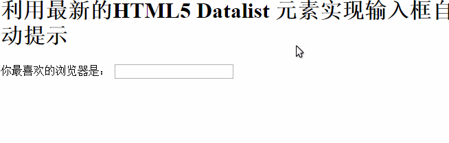
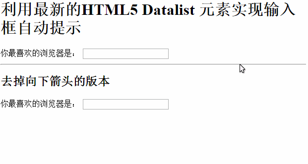
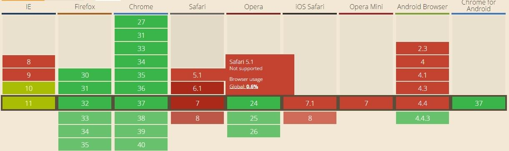

HTML5有无限可能，总是在释出一些新鲜实用的功能，让原生的web环境更加炫酷。
今天看到datalist 这个元素，可以用来预先定义一个输入框的潜在选项，也就是我们在平时项目中经常用jQuery插件或者自己写JS来实现的autocomplete「自动补全，但似乎自动提示更贴切一些」功能。
具体来说，页面上的input还是原来的input，只是在它的下面定义一下新的datalist在其中填充触发提示的文本,同时在该input元素上指定list属性指向这个list。一个大概的例子大概是像下面这样：
|
|
最后出来的效果又差不多是这样的：

在线查看效果请点击这里
没什么特别之处，简单得发指~
但相信大家在看了效果后跟我一样，发现了一个不足之处，在input右边会有向下的箭头，这让它看起来就像一个dropdown 或者select 「下拉框」，解决办法是多加两句CSS代码来将它隐藏，但此方法只是针对webkit内核的浏览器进行的优化：
|
|
这样之后出来的效果差不多成了这样：

浏览器兼容性
下面的数据来自caniuse。

可以看出，遥遥领先的依然是风采依旧的Chrome，对该元素的支持全线飘绿；
同时Firefox也是毫不示弱，紧随版本帝之后;
而其他浏览器情况则各不相同，正所谓幸福的人都相似，不幸的人各有不幸。
Opera在边缘浏览器中表现强劲，绿得很耀眼；
值得注意的是，在这场不算较量的较量中，苹果太子Safari则是黑马般拿到了垫底的位置，全线飘红。这直接一举打破IE在主流浏览器的各种评测中常年垫底的记录。
而IE虽然摆脱了末位的阴影，但即使是最新的IE11也只是对Datalist元素进行了部分支持，所以要与各强劲对手比肩而受到前端开发者的青睐还有些工作要做。但留给IE翻盘的时间已经不多了，正如留给中国队的时间一样~